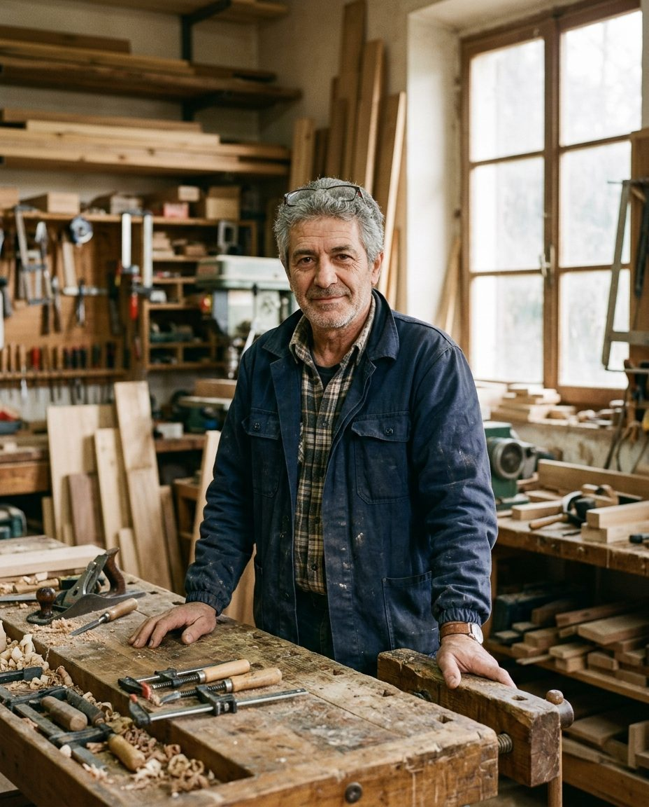

«Pensavo che il sito servisse a farci trovare. Serve a far capire, prima che mi telefonino, che lavoro il legno massello e non il truciolato.»

Mauro Bignami
Falegnameria Bignami, Castel Maggiore. Lavoriamo insieme dal 2023.